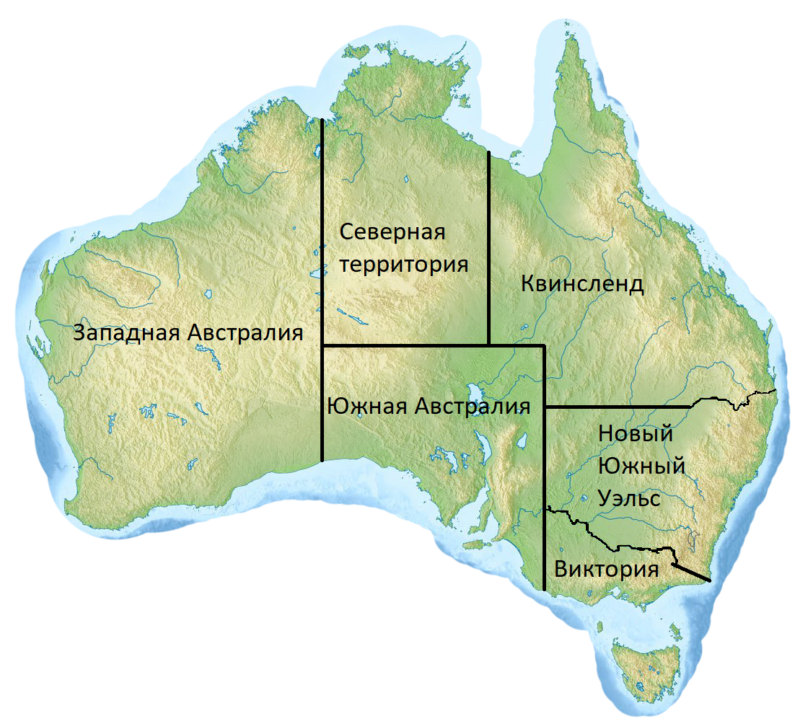

-
ЗАПАДНАЯ АВСТРАЛИЯ
-
Площадь:
2 645 615 км²
-
Столица:
ПЕРТ
-
Плотность:
0,95 чел./км²
-
Население:
2,589 миллиона
-
Премьер-министр:
Марк Мак-Гован
-
Западная Австралия-крупнейший из штатов Австралии, занимающий треть территории континента. Население — 2 239 170 человек[2]
(4-е место среди штатов страны; данные 2011 г.). Столица и крупнейший город — Перт. Главный морской порт Фримантл. Другие города — Мандура, Банбери, Калгурли, Олбани.
Западная Австралия — вторая в мире по величине административно-территориальная единица.
Девиз: «Cygnis Insignis» («Несущий знак лебедя»). Официальное прозвище — «Штат дикого цветка».
-
СЕВЕРНАЯ ТЕРРИТОРИЯ
-
Площадь:
1 421 000 км²
-
Столица:
Дарвин
-
Плотность:
0,16 чел./км²
-
Население:
211 945 чел
-
Премьер-министр:
Майкл Ганнер
-
Северная территория (англ. Northern Territory) — субъект федерации в составе Австралии, на
севере материковой
части страны, статус чуть более низкий, чем у штата. Граничит с Западной Австралией на
западе
(по 129-му восточному меридиану), Южной Австралией на юге (по 26-й южной параллели) и
Квинслендом на востоке
(по 138-му восточному меридиану), включает в себя Землю Александры (название дано в 1862
году).
С севера территория омывается Тиморским морем, Арафурским морем и заливом Карпентария.
Обладая большой
площадью (более 1 349 129 км², третья среди австралийских административно-территориальных
единиц), территория
редко заселена. Численность населения составляет 211 945 человек (2011), что является
наименьшим среди 7
крупных австралийских штатов и территорий.
-
ЮЖНАЯ АВСТРАЛИЯ
-
Площадь:
983 482 км²
-
Столица:
Аделаида
-
Плотность:
1,62 чел./км²
-
Население:
1,677 миллиона
-
Премьер-министр:
Стивен Маршалл
-
Южная Австралия- единственная территория Австралийского Союза, основанная как свободное
поселение эмигрантов
из Великобритании. В 1836 году штат начали заселять не каторжники, а английские
переселенцы, добровольно
переезжавшие на новые земли. Задумка британских властей была проста: Южная Австралия
должна была стать
экономическим и культурным центром колонии, в котором будут верховенствовать гражданское
и религиозное
равенство. И задумка эта была воплощена в жизнь.
Сегодня штат Южная Австралия является одним из лидеров австралийского экспорта. Здесь
находятся крупные
месторождения руды и урана, с успехом функционируют автомобильные и оборонные заводы,
развиты
фармацевтическая промышленность и сельское хозяйство.
-
КВИНСЛЕНД
-
Площадь:
1 730 648 км²
-
Столица:
Брисбен
-
Плотность:
2,5 чел./км²
-
Население:
4 332 739 чел
-
Премьер-министр:
Анастейша Палащук
-
Квинсленд-штат на северо-востоке материковой части Австралии. Население — 4 332 739 человек
(3-е место среди штатов страны). Столица и крупнейший город — Брисбен. Девиз: Audax at Fidelis
(«Смелый, но верный»). Официальные прозвища — «Штат солнечного сияния» и «Умный штат»
(Sunshine State, Smart State).
Первыми поселенцами региона были австралийские аборигены и островитяне пролива Торреса,
которые прибыли, согласно различным методам датирования, 40—65 тысяч лет назад. Позже,
после прибытия европейских колонистов, на территории Квинсленда была создана британская колония,
ставшая отдельной административно-территориальной единицей 6 июня 1859 года. Эта дата теперь ежегодно
отмечается как День Квинсленда.
-
НОВЫЙ ЮЖНЫЙ УЭЛЬС
-
Площадь:
800 642 км²
-
Столица:
Сидней
-
Плотность:
8,64 чел./км²
-
Население:
6 917 658 чел
-
Премьер-министр:
Глэдис Береджиклян
-
Новый Южный Уэльс- штат на юго-востоке Австралии, самая старая и густонаселённая
административно-территориальная единица страны. Население — 6 917 658 человек (2011).
Столица и крупнейший город — Сидней. Другие крупные города — Ньюкасл, Вуллонгонг, Вагга-Вагга,
Олбери, Тамуорт.
Девиз: «Orta Recens Quam Pura Nites» («Вновь взошедший, как ярко ты сияешь!»). Официальные прозвища —
«Первый штат», «Штат-премьер».
-
ВИКТОРИЯ
-
Площадь:
227 416 км²
-
Столица:
Мельбурн
-
23,54 чел./км²
8,64 чел./км²
-
Население:
5 354 042 чел
-
Премьер-министр:
Дэниел Эндрюс
-
Виктория- штат на юго-востоке Австралии, самый маленький по территории штат в континентальной части страны.
Население 5 354 042 человека (2011). Столица и крупнейший город — Мельбурн. Официальное прозвище — «Садовый штат».
Девиз — «Мир и процветание». Морским символом штата является тряпичник.